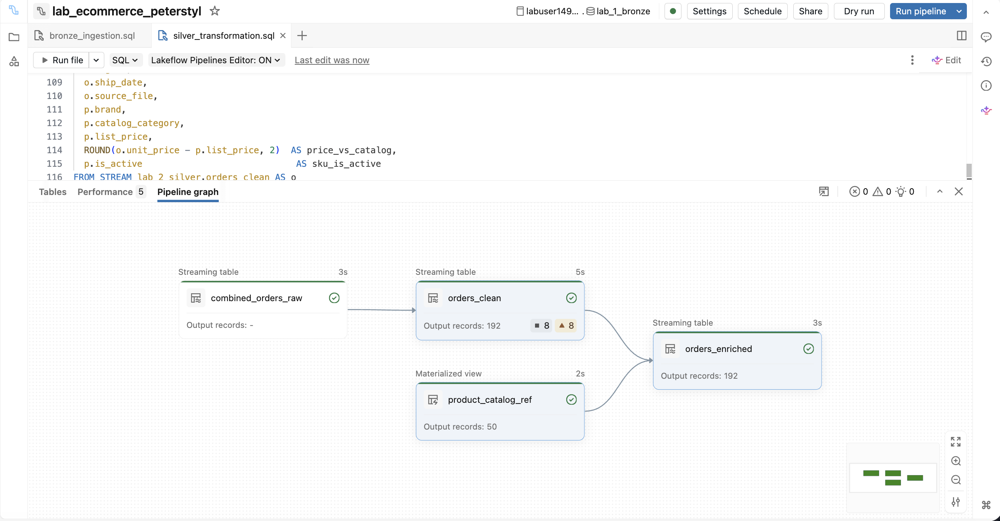

Section 3 · Data Transformation and Modelling · Quelle: Kurs 5, Kapitel 9 (Lab)
Die vorangegangenen Kapitel dieses Themenordners haben Multi-Flow-Ingestion, Liquid Clustering, erweiterte Expectations und das Quarantäne-Muster jeweils isoliert betrachtet. In der Praxis treten diese Techniken jedoch selten einzeln auf – ein realistisches Pipeline-Projekt kombiniert sie zu einem durchgängigen Ganzen. Als Abschluss dieses Themenordners dient daher ein zusammenfassendes Praxisbeispiel: Ein E-Commerce-Unternehmen erhält Bestellungen über zwei Kanäle – Website und mobile App – die in unterschiedlichen Formaten vorliegen und teils unterschiedliche Felder mitbringen. Ziel ist eine Pipeline, die beide Kanäle konsolidiert, validiert, um Produktstammdaten anreichert und wöchentliche Umsatzberichte für den Fachbereich bereitstellt.
App-Bestellungen liegen als JSON vor, Web-Bestellungen als CSV – beide Formate enthalten teils unterschiedliche Spalten (z. B. browser und session_id nur bei Web, os und device_model nur bei App). Anstatt zwei getrennte Bronze-Tabellen zu pflegen, kommt hier – wie in Kapitel 6 dieser Section eingeführt – das Multi-Flow-Muster zum Einsatz: Eine gemeinsame Zieltabelle mit einer Superset-Spaltenliste wird von zwei unabhängigen Flows gespeist. Jeder Flow castet konsequent auf STRING und lässt kanal-spezifische Spalten, die er nicht liefert, implizit auf NULL:
CREATE OR REPLACE STREAMING TABLE lab_1_bronze.combined_orders_raw
(
order_id STRING, order_date STRING, customer_id STRING, sku STRING,
model STRING, category STRING, order_type STRING, channel STRING,
quantity STRING, unit_price STRING, discount_code STRING,
discount_amount STRING, total_amount STRING, payment_method STRING,
order_status STRING, city STRING, region STRING, ship_date STRING,
browser STRING, session_id STRING, -- nur bei Web-Kanal befüllt
os STRING, app_version STRING, device_model STRING, -- nur bei App-Kanal befüllt
source_file STRING, file_mod_time TIMESTAMP, ingestion_time TIMESTAMP
)
COMMENT "Unified Bronze streaming table - web and app orders combined via multi-flow ingestion."
TBLPROPERTIES ('pipelines.reset.allowed' = false);
-- Flow 1: App-Bestellungen (JSON)
CREATE FLOW app_orders_flow
AS INSERT INTO lab_1_bronze.combined_orders_raw BY NAME
SELECT
CAST(order_id AS STRING) AS order_id,
-- ... weitere gemeinsame Spalten ...
CAST(os AS STRING) AS os,
CAST(device_model AS STRING) AS device_model,
_metadata.file_name AS source_file,
current_timestamp() AS ingestion_time
FROM STREAM read_files(
'${app_orders_source}', format => 'json', schemaHints => 'discount_code STRING'
);
-- Flow 2: Web-Bestellungen (CSV) - schreibt in dieselbe Zieltabelle
CREATE FLOW web_orders_flow
AS INSERT INTO lab_1_bronze.combined_orders_raw BY NAME
SELECT
CAST(order_id AS STRING) AS order_id,
-- ... weitere gemeinsame Spalten ...
CAST(browser AS STRING) AS browser,
CAST(session_id AS STRING) AS session_id,
_metadata.file_name AS source_file,
current_timestamp() AS ingestion_time
FROM STREAM read_files(
'${web_orders_source}', format => 'csv', header => true, schemaHints => 'discount_code STRING'
);
Jeder Kanal besitzt dadurch seinen eigenen Checkpoint: Käme künftig ein dritter Vertriebskanal hinzu, ließe sich dieser als weiterer Flow ergänzen, ohne die Historie der bestehenden zwei Flows neu verarbeiten zu müssen.
In der Silver-Schicht wird zunächst typisiert und validiert – mit einer bewussten Mischung aus FAIL UPDATE für die geschäftskritische Bestell-ID, DROP ROW für unbrauchbare Zeilen (fehlende SKU, unplausible Menge) und WARN für Auffälligkeiten, die zwar geprüft, aber nicht blockiert werden sollen. Die Tabelle nutzt zugleich CLUSTER BY AUTO für Liquid Clustering:
CREATE OR REFRESH STREAMING TABLE lab_2_silver.orders_clean
(
CONSTRAINT valid_order_id EXPECT (order_id IS NOT NULL) ON VIOLATION FAIL UPDATE,
CONSTRAINT valid_sku EXPECT (sku IS NOT NULL) ON VIOLATION DROP ROW,
CONSTRAINT positive_quantity EXPECT (quantity >= 1) ON VIOLATION DROP ROW,
CONSTRAINT positive_unit_price EXPECT (unit_price > 0), -- WARN (Default)
CONSTRAINT valid_total_amount EXPECT (total_amount >= 0) -- WARN (Default)
)
COMMENT "Silver clean orders - type-cast, quality-validated, liquid-clustered."
CLUSTER BY AUTO
AS
SELECT
order_id,
TRY_CAST(order_date AS TIMESTAMP) AS order_date,
customer_id, sku, model, category, order_type, channel,
TRY_CAST(quantity AS INT) AS quantity,
TRY_CAST(unit_price AS DOUBLE) AS unit_price,
TRY_CAST(total_amount AS DOUBLE) AS total_amount,
source_file, ingestion_time
FROM STREAM lab_1_bronze.combined_orders_raw;
-- Produktkatalog als Materialized View: die statische Seite des Joins
CREATE OR REFRESH MATERIALIZED VIEW lab_2_silver.product_catalog_ref
COMMENT "Product catalog reference - brand, category, and list price per SKU."
AS
SELECT sku, brand, category AS catalog_category,
CAST(list_price AS DOUBLE) AS list_price,
CAST(is_active AS BOOLEAN) AS is_active
FROM read_files('${product_catalog_source}', format => 'csv', header => true);
-- Stream-Static-Join: Streaming-Bestellungen werden bei jedem Trigger
-- gegen den (statischen) Produktkatalog angereichert
CREATE OR REFRESH STREAMING TABLE lab_2_silver.orders_enriched
COMMENT "Enriched Silver orders - stream-static join adds brand, catalog category, and list price."
CLUSTER BY AUTO
AS
SELECT
o.order_id, DATE(o.order_date) AS order_date, o.customer_id, o.sku,
o.order_type, o.channel, o.quantity, o.unit_price, o.total_amount,
p.brand, p.catalog_category, p.list_price,
ROUND(o.unit_price - p.list_price, 2) AS price_vs_catalog,
p.is_active AS sku_is_active
FROM STREAM lab_2_silver.orders_clean AS o
LEFT JOIN lab_2_silver.product_catalog_ref AS p
ON o.sku = p.sku;
Der Stream-Static-Join ist dabei das Muster, das bereits in Kapitel 4 dieser Section (Streaming Joins) eingeführt wurde: Die Streaming-Seite (orders_clean) wird inkrementell verarbeitet, während die statische Seite (product_catalog_ref) bei jedem Pipeline-Lauf neu gelesen wird – so fließen auch nachträgliche Änderungen am Produktkatalog (z. B. ein aktualisierter Listenpreis) in künftige Läufe ein. Der LEFT JOIN sorgt dafür, dass Bestellungen auch dann erhalten bleiben, wenn die zugehörige SKU noch nicht im Katalog gepflegt ist.

Den Abschluss bildet eine Gold-Materialized-View, die aus den angereicherten Bestelldaten die für Fachbereiche relevanten Kennzahlen aggregiert – Umsatz, Rabatte, Bestellmengen, jeweils aufgeschlüsselt nach Kategorie, Marke, Kanal und Region:
CREATE OR REPLACE MATERIALIZED VIEW lab_3_gold.weekly_revenue_by_category
COMMENT "Gold MV: Daily gross revenue, units, and order count by category and channel."
AS
SELECT
order_date,
catalog_category AS category,
brand,
order_type AS channel,
region,
COUNT(DISTINCT order_id) AS total_orders,
SUM(quantity) AS units_sold,
ROUND(SUM(total_amount), 2) AS gross_revenue,
ROUND(SUM(discount_amount), 2) AS total_discounts,
ROUND(SUM(total_amount) - SUM(discount_amount), 2) AS net_revenue,
ROUND(AVG(total_amount), 2) AS avg_order_value,
COUNT(CASE WHEN discount_code IS NOT NULL THEN 1 END) AS discounted_orders,
current_timestamp() AS last_refreshed
FROM lab_2_silver.orders_enriched
WHERE order_date IS NOT NULL AND catalog_category IS NOT NULL
GROUP BY order_date, catalog_category, brand, order_type, region;
Diese Materialized View wird bei jedem Pipeline-Lauf inkrementell aktualisiert und bildet die Grundlage für Dashboards, die Umsatzentwicklung nach Produktkategorie und Vertriebskanal visualisieren. Als Materialized View berechnet sie sich automatisch neu, sobald sich die zugrunde liegenden Silver-Daten ändern – ohne dass ein manueller Aktualisierungsprozess gepflegt werden müsste.
Diese Lab-Pipeline fasst damit die zentralen Themen des Ordners in einem einzigen, durchgängigen Beispiel zusammen: Multi-Flow-Ingestion konsolidiert heterogene Quellkanäle in einer Bronze-Tabelle, Expectations mit unterschiedlichen Verletzungsaktionen sichern die Datenqualität in der Silver-Schicht, Liquid Clustering optimiert das Datenlayout ohne manuelles Tuning, ein Stream-Static-Join reichert Streaming-Daten um Referenzdaten an, und eine Gold-Materialized-View liefert am Ende konsumierbare Kennzahlen für den Fachbereich. Wer diese Bausteine einzeln verstanden hat, kann sie – wie hier gezeigt – in nahezu beliebiger Kombination zu robusten, produktionsreifen Pipelines zusammensetzen.